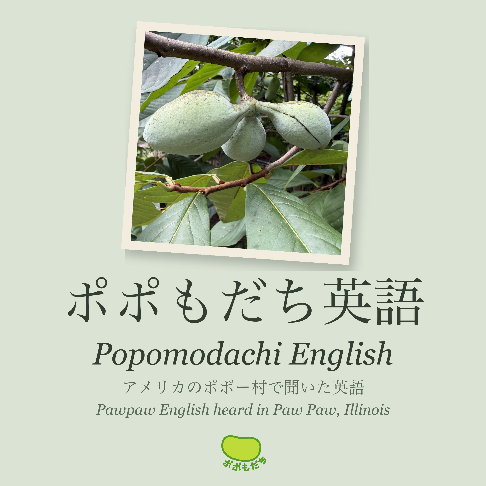

ポポもだち英語
アメリカのポポー村で聞いた英語
2026年9月、アメリカ・イリノイ州のポポー村（Paw Paw）で開かれたポポーフェスティバル。そこで実際に聞いた英語の文を、英語→日本語→英語の順に流します。ポポーの育て方、実の味、フェスの運営まで。聞き流すだけで、ポポーの英語に耳が慣れていきます。広島県神石高原町のポポもがお届けします。
Podcastアプリで聞く：アプリの「URLで番組を追加」に次のアドレスを入れてください。
https://popomodao.github.io/popomodachi-english/feed.xml
- 第1回 例文1〜80・19分
- 第2回 例文81〜160・20分
- 第3回 例文161〜240・21分
- 第4回 例文241〜320・20分
- 第5回 例文321〜400・21分
- 第6回 例文401〜480・22分
- 第7回 例文481〜560・21分
- 第8回 例文561〜640・20分
- 第9回 例文641〜673・8分
読み上げ音声：Kokoro-82M（Apache-2.0）